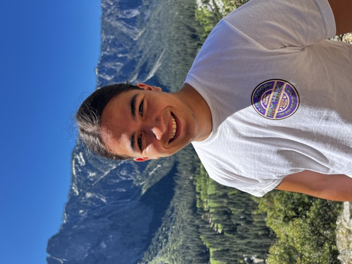

About me
I build hardware, and the machines that test it.
I'm a mechanical engineer in Los Angeles, trained in aerospace at Purdue, though in practice I do whatever the project in front of me needs: design, analysis, manufacturing, electronics, and the code that runs it all. What ties it together is the line between hardware and software, which usually means robotics, and especially the machines that build other things.
Now
These days I'm a mechanical engineer at Icarus, a startup in El Segundo building solar-powered fixed-wing aircraft for the stratosphere, designed to fly for twelve hours at 65,000 feet. I'm on the airframe team, where I own the carbon fiber fuselage from composite design and design for manufacturing in CATIA all the way through testing and validation.
Everything about an aircraft like that is a fight against weight. The fuselage has to carry nine kilograms of cargo and a propeller mounted on its nose, and it still weighs less than a liter of water.
I also own all of the testing for the airframe team, which so far has meant designing drop-test and load-test rigs, running thermal tests in altitude chambers, and building my second thrust stand.
How I Got Here
I grew up in Lima, Peru, and moved to the US in 2021 to study aerospace at Purdue, mostly because I wanted to build rockets. I still have a soft spot for that world (my first student team built a methane and oxygen rocket, and I helped design its injector), but what really stuck was the hands-on part.
Every job after that pulled me a little further toward the shop floor. At Zipline I built the rigs that qualified drone motors, propellers, and batteries, including the prop balancer, thrust stand, and battery leak tester on this site. At Bridgestone I reworked imported tire-assembly machines to meet US standards and run faster, and back at Purdue I taught other students to run the machine shop. Somewhere in there I realized I liked the shop as much as the CAD seat: machining, welding, wiring, and writing the code that runs the thing.
My first full-time job out of college was on the electrolyzer team at Terraform Industries, led by @CJHandmer. Terraform turns sunlight and air into natural gas with three machines (a reactor, direct air capture, and the electrolyzer, which splits water to make hydrogen), and I spent my time there on the electrolyzer, doing a bit of everything from design and manufacturing to analysis and test.
The build I'm proudest of from those days is a plastic welding machine that fuses the stacks into a single piece. I took it from the steel frame all the way through the electronics, while designing injection-molded parts for the product on the side. The best parts of that project never showed up in a CAD model: school had barely touched electrical systems, so I taught myself, and now I build my own power and control panels. Along the way I also picked up enough networking to get most of the machines talking to each other.
Some of my most valuable days there were spent at our desert test site, pushing stacks past their limits on purpose and under controlled conditions, so we'd know exactly how a design fails long before it could fail anywhere that mattered.
In July 2026 I left for Icarus, which brought me back to aerospace, where this all began. I'm still a generalist by default. Most of what I know I taught myself, usually because I wanted to finish something I'd started and the only thing in the way was a skill I didn't have yet.
Experience
- 2026Icarus: on the airframe team at a startup building solar-powered stratospheric aircraft, where I own the design, testing, and validation of the carbon fiber fuselage.
- 2025Terraform Industries: on the electrolyzer team at a startup turning air and sunlight into natural gas, where I designed, built, and tested the machines that make the stacks.
- 2024Zipline: designed test and manufacturing hardware for an autonomous delivery drone company, mostly the rigs that qualified motors, propellers, and batteries.
- 2023Bridgestone: re-engineered imported tire-assembly machines to meet US standards and run faster during a large plant expansion.
- 2022NASA RETH Institute: built and tested a thermal panel that let a scaled habitat model trade heat with a real-time simulation.
- 2022Bechtel Innovation and Design Center: mentored students through the design process and taught them to run the machine shop.
- 2021Purdue Space Program: Liquids: helped design the injector for a student-built methane and oxygen rocket entered in a desert launch competition.
Off the Clock
Outside of work I'm usually building something that moves, or taking broken hardware apart to see how it works. I cook well past my skill level and surf whenever the water cooperates, and the lightsaber on this site is a pretty good picture of a normal weekend.
Contact
If you're building something hard, I'd like to hear about it.